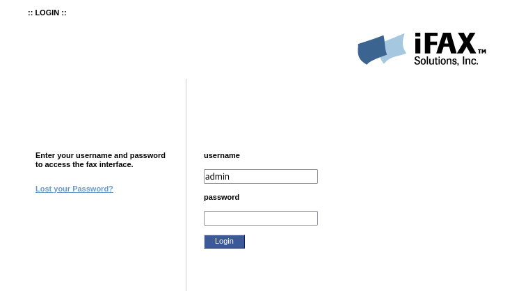
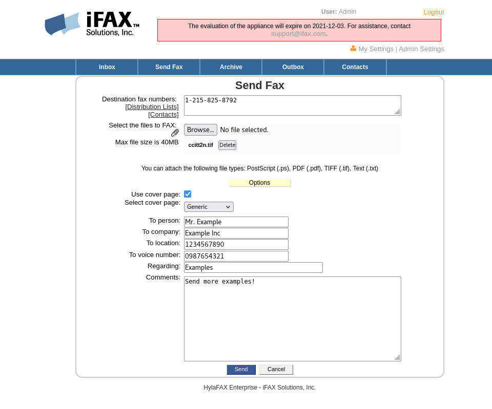

Web Interface Start Up¶
You can connect to the HylaFAX Enterprise Web Interface with the following credentials:
Username:admin Password:password
Afterwards, you will be prompted to change the password for admin.

The appliance is initially configured with two virtual fax devices operating in loop-back mode.
Click on Send Fax and send a fax to any fax number, and it should be received and routed to the Inbox.

NOTE:If you send a fax to 1-215-825-8792, the first page of your fax will be faxed back to the number used in your Caller ID.
Need test faxes?